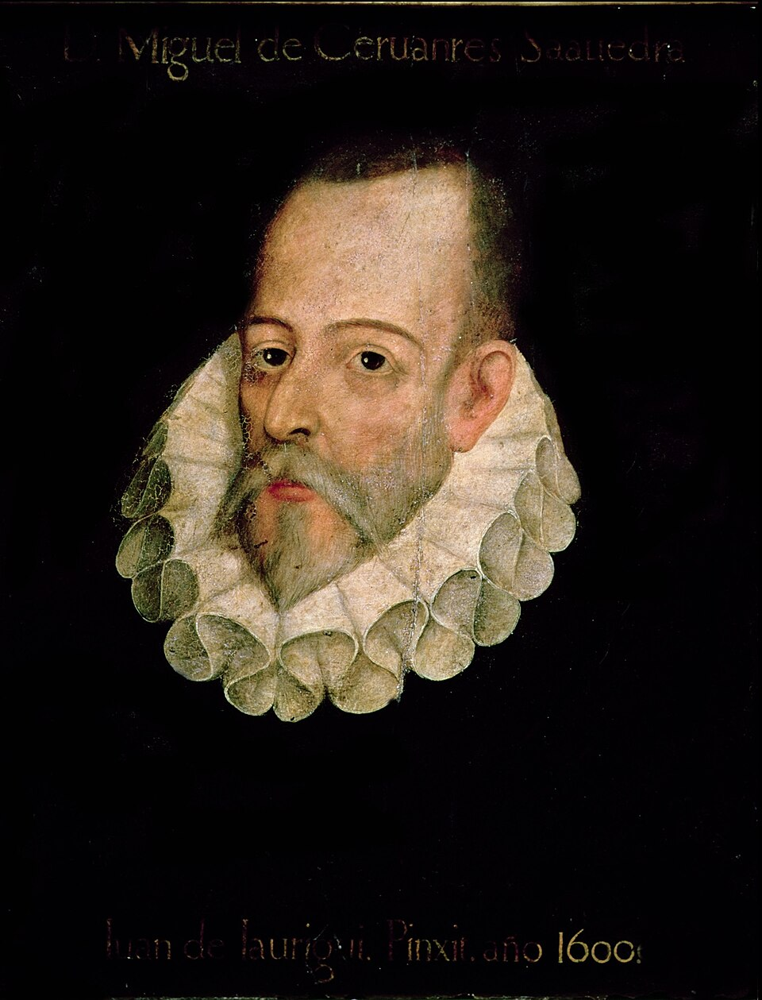

En la misma fecha mueren Cervantes en Madrid y Shakespeare en Inglaterra
El manco de Lepanto, padre de Don Quijote, fue enterrado hoy en el convento de las Trinitarias; y de Inglaterra llegará la nueva de que el comediante y poeta de Stratford, dueño del teatro del Globo, expiró en este mismo veintitrés de abril. Las dos lenguas quedan huérfanas a la vez.

Ayer entregó su alma en su casa de la calle del León don Miguel de Cervantes Saavedra, y hoy lo enterraron, con el sayal de la orden tercera de San Francisco y el rostro descubierto, en el convento de las monjas Trinitarias, las mismas que ayudaron a rescatarlo del cautiverio de Argel hace ya tantas vidas. Murió pobre, como vivió casi siempre: el soldado que perdió la mano izquierda en Lepanto «para mayor gloria de la derecha», el cautivo, el recaudador preso por cuentas ajenas, el autor que a los cincuenta y ocho años, cuando ya nadie apostaba por él, dio a las prensas un libro sobre un hidalgo loco que confunde molinos con gigantes.
De ese libro sí anda sobrada España, y las Indias, y Francia, y cuantos reinos alcanzan las flotas: el «Don Quijote» se vende y se roba en ediciones legítimas y falsas, y sus personajes ya son más conocidos que muchos príncipes. Apenas semanas atrás, sintiéndose morir, Cervantes despachó la dedicatoria de su último libro con una despedida que ningún poeta mejoró: «puesto ya el pie en el estribo», escribió, se iba muriendo y deseando ver contentos a sus amigos. La sepultura es humilde y sin losa nombrada; quiera el tiempo que no se pierda, aunque quien escribió tal libro tiene sepultura en todas las bibliotecas.
Vida más novelesca que sus novelas: a los veinticuatro peleó en Lepanto con fiebre y contra el consejo de sus jefes, y del arcabuzazo le quedó seca la mano izquierda; a la vuelta cayó cautivo de los corsarios y pasó cinco años en los baños de Argel, donde encabezó cuatro fugas y las cuatro veces se declaró único culpable, esperando un castigo que nunca llegó, quizá porque hasta sus carceleros lo estimaban. Ya en España conoció la cárcel de Sevilla por las cuentas de su oficio de recaudador, y en esa cárcel, dice él mismo, «se engendró» el Quijote. Hasta un impostor tuvo: cierto Avellaneda publicó una segunda parte falsa, y el agravio le hizo al mundo el favor de apurar la verdadera, que muchos juzgan aún mejor que la primera.
Del inglés cuentan los viajeros que llevaba años retirado en su pueblo, hecho un señor de tierras y diezmos, él que, según dicen, empezó cuidando caballos a la puerta de los teatros: su compañía fue la del rey, su teatro del Globo ardió hace tres años por un cañonazo de utilería en plena función, y sus comedias andan en cuadernos sueltos, mal impresas o guardadas en la memoria de los cómicos. Si sus amigos no las reúnen pronto en un volumen, el tiempo hará con ellas lo que hace con todo lo suelto. Y sería lástima de las grandes: los que vieron dudar a su príncipe de Dinamarca —ser o no ser, dicen que se pregunta— juran que en esa pregunta cabe el siglo entero.
Y anote el curioso esta coincidencia que parece inventada por un comediante: según las cartas que llegan de Inglaterra, en este mismo veintitrés de abril ha muerto en su pueblo de Stratford el señor William Shakespeare, autor de tragedias que los viajeros ponderan —un príncipe danés que duda, un moro celoso, un rey viejo y loco en un páramo— y dueño que fue del teatro del Globo. Los pedantes aclararán que Inglaterra, terca en no aceptar el calendario del papa Gregorio, cuenta los días con diez de atraso, y que por tanto ambos ingenios no murieron bajo el mismo cielo sino bajo la misma cifra. Déjeselos: hay simetrías que valen más que la cronología, y el veintitrés de abril queda desde hoy consagrado, en dos lenguas, a los que hacen con palabras mundos más duraderos que los reinos.